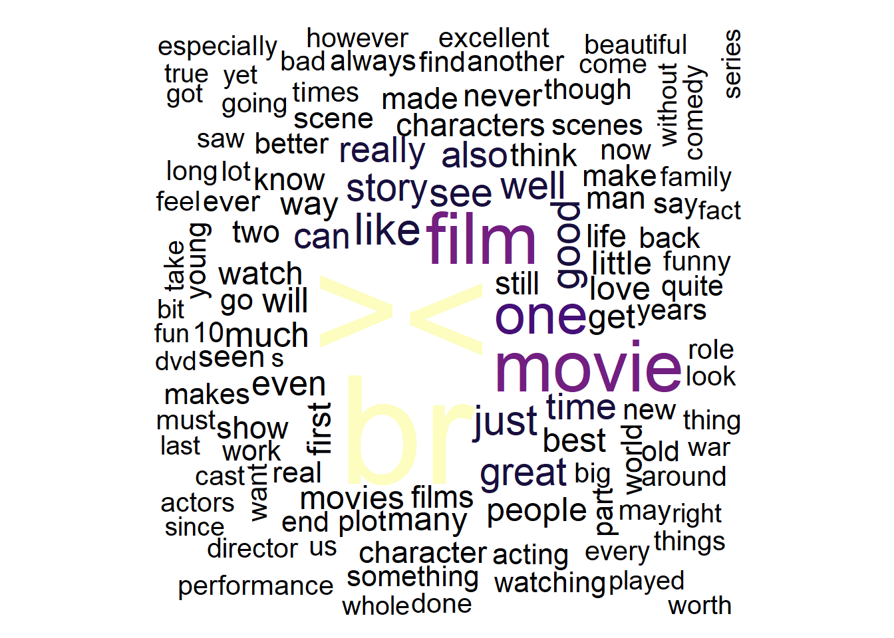
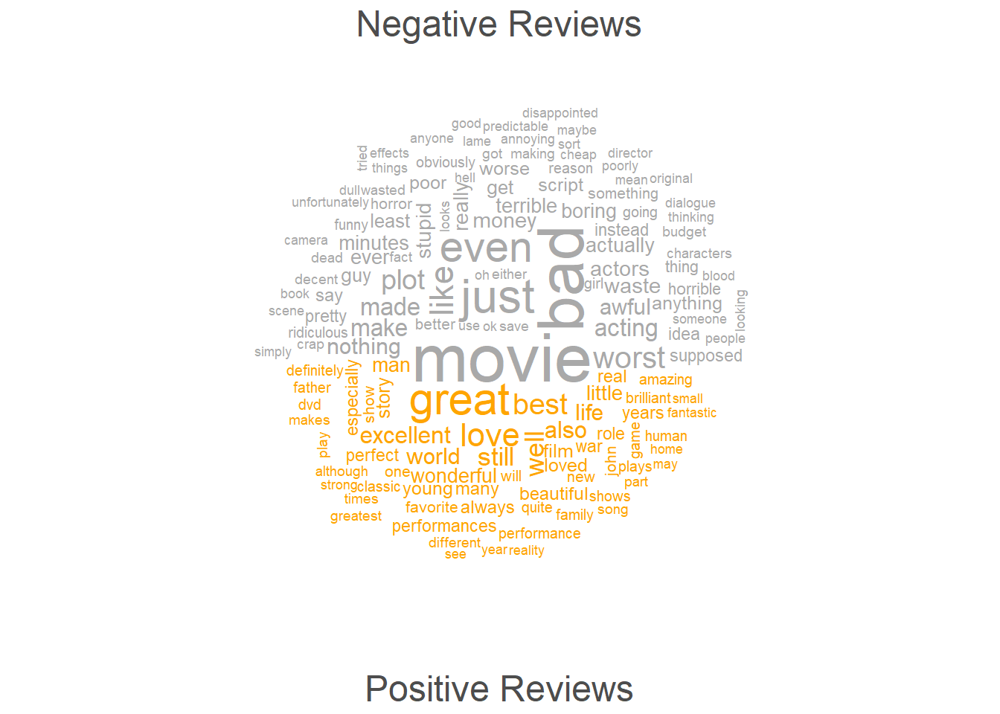

Section 7 Basics of Data Visualization
There are numerous function in R that we can use to visualize data. We will use the ggplot function from the ggplot2 package here to visualize the data.
The ggplot2 package was developed by Hadley Wickham in 2005 and it implements the graphics scheme described in the book The Grammar of Graphics by Leland Wilkinson.
The idea behind the Grammar of Graphics can be boiled down to 5 bullet points (see Wickham 2016: 4):
a statistical graphic is a mapping from data to aesthetic attributes (location, color, shape, size) of geometric objects (points, lines, bars).
the geometric objects are drawn in a specific coordinate system.
scales control the mapping from data to aesthetics and provide tools to read the plot (i.e., axes and legends).
the plot may also contain statistical transformations of the data (means, medians, bins of data, trend lines).
faceting can be used to generate the same plot for different subsets of the data.
7.1 Basics of ggplot2 syntax
Specify data, aesthetics and geometric shapes
ggplot(data, aes(x=, y=, color=, shape=, size=)) +
geom_point(), or geom_histogram(), or geom_boxplot(), etc.
This combination is very effective for exploratory graphs.
The data must be a data frame.
The
aes()function maps columns of the data frame to aesthetic properties of geometric shapes to be plotted.ggplot()defines the plot; thegeomsshow the data; each component is added with+Some examples should make this clear
Before we start plotting, we will load tabular data (information about the speakers in the dinner conversations) and the prepare the data that we want to visualize. From this table, we create two versions:
a basic cleaned version
a summary table with the mean word counts by gender and age.
# create clean basic table
readxl::read_excel(here::here("data", "ICEdata.xlsx")) %>%
# only private dialogue
dplyr::filter(stringr::str_detect(text.id, "S1A"),
# without speaker younger than 19
age != "0-18",
age != "NA",
sex != "NA",
word.count > 10) %>%
dplyr::mutate(age = factor(age),
sex = factor(sex),
date = factor(date)) -> pdat
# create summary table
readxl::read_excel(here::here("data", "ICEdata.xlsx")) %>%
# only private dialogue
dplyr::filter(stringr::str_detect(text.id, "S1A"),
# without speaker younger than 19
age != "0-18",
age != "NA") %>%
dplyr::group_by(sex, age) %>%
dplyr::summarise(words = mean(word.count)) -> psum
# inspect
head(pdat); head(psum)## # A tibble: 6 × 9
## id file.speaker.id text.id spk.ref zone date sex age word.count
## <dbl> <chr> <chr> <chr> <chr> <fct> <fct> <fct> <dbl>
## 1 1 <S1A-001$A> S1A-001 A northern i… 1990… male 34-41 765
## 2 2 <S1A-001$B> S1A-001 B northern i… 1990… fema… 34-41 1298
## 3 4 <S1A-002$A> S1A-002 A northern i… 2002… fema… 26-33 391
## 4 5 <S1A-002$B> S1A-002 B northern i… 2002… fema… 19-25 47
## 5 6 <S1A-002$C> S1A-002 C northern i… 2002… male 50+ 200
## 6 7 <S1A-002$D> S1A-002 D northern i… 2002… fema… 50+ 464## # A tibble: 6 × 3
## # Groups: sex [2]
## sex age words
## <chr> <chr> <dbl>
## 1 female 19-25 562.
## 2 female 26-33 531.
## 3 female 34-41 543.
## 4 female 42-49 501.
## 5 female 50+ 632.
## 6 male 19-25 570.We will now create some basic visualizations or plots.
7.2 Line plot
In the example below, we specify that we want to visualize the plotdata and that the x-axis should represent Age and the y-axis Words(the mean frequency of words). We also tell R that we want to group the data by Sex (i.e. that we want to distinguish between men and women). Then, we add geom_line which tells R that we want a line graph. The result of this is shown below.

7.3 Prettifying plots
Once you have a basic plot like the one above, you can prettify the plot. For example, you can
change the width of the lines (
size = 1.25)change the y-axis limits (
coord_cartesian(ylim = c(0, 1000)))use a different theme (
theme_bw()means black and white theme)move the legend to the top
change the default colors to colors you like (*scale_color_manual …`)
change the linetype (
scale_linetype_manual ...)
psum %>%
ggplot(aes(x = age, y = words, color = sex, group = sex, linetype = sex)) +
geom_line(size = 1.25) +
coord_cartesian(ylim = c(0, 1500)) +
theme_bw() +
theme(legend.position = "top") +
scale_color_manual(breaks = c("female", "male"),
values = c("gray20", "gray50")) +
scale_linetype_manual(breaks = c("female", "male"),
values = c("solid", "dotted")) +
labs(x = "Age groups", y = "Average word count\n(per 1,000 words)")
7.4 Combining plots
An additional and very handy feature of this way of producing graphs is that you
can integrate them into pipes
can easily combine plots.
Below, we first generate a scatter plot with geom_jitter and then add a line plot by summarising the data.
pdat %>%
ggplot(aes(x = age,
y = word.count,
color = sex,
linetype = sex)) +
geom_jitter(alpha = .5, width = .2) +
stat_summary(fun=mean, geom="line", aes(group=sex)) +
coord_cartesian(ylim = c(0, 2500)) +
theme_bw() +
theme(legend.position = "top") +
scale_color_manual(breaks = c("female", "male"),
values = c("indianred", "darkblue")) +
scale_linetype_manual(breaks = c("female", "male"),
values = c("solid", "dotted"))
7.6 Barplots
To exemplify a bar plot, we generate a plot with geom_bar which shows the number of men and women by Date.
pdat %>%
dplyr::select(date, sex, text.id) %>%
unique() %>%
dplyr::group_by(date, sex) %>%
dplyr::summarize(speakers = n()) %>%
ggplot(aes(x = date, y = speakers, fill = date, label = speakers)) +
facet_wrap(vars(sex), ncol = 2) +
geom_bar(stat = "identity") +
geom_text(vjust=-1.6, color = "black") +
coord_cartesian(ylim = c(0, 100)) +
theme_bw() +
scale_fill_manual(breaks = c("1990-1994", "1995-2001", "2002-2005"),
values = c("#E69F00", "lightgray", "#56B4E9"))7.7 Wordclouds
Word clouds are visual representations where words appear larger based on their frequency, offering a quick visual summary of word importance in a dataset.
# create a word cloud visualization
reviews_pos %>%
# Convert text data to a quanteda corpus
quanteda::corpus() %>%
# tokenize the corpus, removing punctuation
quanteda::tokens(remove_punct = TRUE) %>%
# remove English stopwords
quanteda::tokens_remove(stopwords("english")) %>%
# create a document-feature matrix (DFM)
quanteda::dfm() %>%
# generate a word cloud using textplot_wordcloud
quanteda.textplots::textplot_wordcloud(
# maximum words to display in the word cloud
max_words = 150,
# determine the maximum size of words
max_size = 10,
# determine the minimum size of words
min_size = 1.5,
# Define a color palette for the word cloud
color = scales::viridis_pal(option = "A")(10)) 
The textplot_wordcloud function creates a word cloud visualization of text data in R. Its main arguments are x (a Document-Feature Matrix or DFM), max_words (maximum words to display), and color (color palette for the word cloud).
Another form of word clouds, known as comparison clouds, is helpful in discerning disparities between texts. For instance, we can load various texts and assess how they vary in terms of word frequencies. To illustrate this, we’ll reload the positive reviews but also load negative reviews. We also combine the two types of reviews into single documents (one document for the positive reviews and another document for the negative reviews).
# load reviews
posreviews <- list.files(here::here("data/reviews_pos"), full.names = T, pattern = ".*txt") %>%
purrr::map_chr(~ readr::read_file(.)) %>% str_c(collapse = " ") %>% str_remove_all("<.*?>")
negreviews <- list.files(here::here("data/reviews_neg"), full.names = T, pattern = ".*txt") %>%
purrr::map_chr(~ readr::read_file(.))%>% str_c(collapse = " ") %>% str_remove_all("<.*?>")
# inspect
str(posreviews); str(negreviews)## chr "One of the other reviewers has mentioned that after watching just 1 Oz episode you'll be hooked. They are right"| __truncated__## chr "Basically there's a family where a little boy (Jake) thinks there's a zombie in his closet & his parents are fi"| __truncated__Now, we generate a corpus object from these texts and create a variable with the author name.
corp_dom <- quanteda::corpus(c(posreviews, negreviews))
attr(corp_dom, "docvars")$Author = c("Positive Reviews", "Negative Reviews")Now, we can remove so-called stopwords (non-lexical function words) and punctuation and generate the comparison cloud.
# create a comparison word cloud for a corpus
corp_dom %>%
# tokenize the corpus, removing punctuation, symbols, and numbers
quanteda::tokens(remove_punct = TRUE,
remove_symbols = TRUE,
remove_numbers = TRUE) %>%
# remove English stopwords
quanteda::tokens_remove(stopwords("english")) %>%
# create a Document-Feature Matrix (DFM)
quanteda::dfm() %>%
# group the DFM by the 'Author' column from 'corp_dom'
quanteda::dfm_group(groups = corp_dom$Author) %>%
# trim the DFM, keeping terms that occur at least 10 times
quanteda::dfm_trim(min_termfreq = 10, verbose = FALSE) %>%
# generate a comparison word cloud
quanteda.textplots::textplot_wordcloud(
# create a comparison word cloud
comparison = TRUE,
# set colors for different groups
color = c("darkgray", "orange"),
# define the maximum number of words to display in the word cloud
max_words = 150) 
7.8 Going further
If you want to know more, there are various online resources available to learn R (you can check out a very recommendable introduction here).
Here are also some additional resources that you may find helpful:
- Grolemund. G., and Wickham, H., R 4 Data Science, 2017.
- Highly recommended! (especially chapters 1, 2, 4, 6, and 8)
- Stat545 - Data wrangling, exploration, and analysis with R. University of British Columbia. http://stat545.com/
- Swirlstats, a package that teaches you R and statistics within R: https://swirlstats.com/
- DataCamp’s (free) Intro to R interactive tutorial: https://www.datacamp.com/courses/free-introduction-to-r
- DataCamp’s advanced R tutorials require a subscription. *Twitter:
- Explore RStudio Tips https://twitter.com/rstudiotips
- Explore #rstats, #rstudioconf
7.9 Ending R sessions
At the end of each session, you can extract information about the session itself (e.g. which R version you used and which versions of packages). This can help others (or even your future self) to reproduce the analysis that you have done.
You can extract the session information by running the sessionInfo function (without any arguments)
## R version 4.3.2 (2023-10-31 ucrt)
## Platform: x86_64-w64-mingw32/x64 (64-bit)
## Running under: Windows 11 x64 (build 22621)
##
## Matrix products: default
##
##
## locale:
## [1] LC_COLLATE=English_Australia.utf8 LC_CTYPE=English_Australia.utf8
## [3] LC_MONETARY=English_Australia.utf8 LC_NUMERIC=C
## [5] LC_TIME=English_Australia.utf8
##
## time zone: Australia/Brisbane
## tzcode source: internal
##
## attached base packages:
## [1] stats graphics grDevices datasets utils methods base
##
## other attached packages:
## [1] udpipe_0.8.11 flextable_0.9.6 here_1.0.1 tokenizers_0.3.0
## [5] tm_0.7-13 NLP_0.2-1 readxl_1.4.3 quanteda_4.0.2
## [9] tidytext_0.4.2 lubridate_1.9.3 forcats_1.0.0 stringr_1.5.1
## [13] dplyr_1.1.4 purrr_1.0.2 readr_2.1.5 tidyr_1.3.1
## [17] tibble_3.2.1 ggplot2_3.5.0 tidyverse_2.0.0
##
## loaded via a namespace (and not attached):
## [1] textplot_0.2.2 gridExtra_2.3
## [3] rlang_1.1.3 magrittr_2.0.3
## [5] compiler_4.3.2 systemfonts_1.0.6
## [7] vctrs_0.6.5 httpcode_0.3.0
## [9] pkgconfig_2.0.3 crayon_1.5.2
## [11] fastmap_1.1.1 labeling_0.4.3
## [13] ggraph_2.2.1 utf8_1.2.4
## [15] promises_1.2.1 rmarkdown_2.26
## [17] tzdb_0.4.0 ragg_1.3.0
## [19] xfun_0.43 cachem_1.0.8
## [21] jsonlite_1.8.8 SnowballC_0.7.1
## [23] highr_0.10 later_1.3.2
## [25] tweenr_2.0.3 uuid_1.2-0
## [27] parallel_4.3.2 stopwords_2.3
## [29] R6_2.5.1 bslib_0.7.0
## [31] stringi_1.8.3 jquerylib_0.1.4
## [33] cellranger_1.1.0 Rcpp_1.0.12
## [35] bookdown_0.38 assertthat_0.2.1
## [37] knitr_1.45 klippy_0.0.0.9500
## [39] httpuv_1.6.15 Matrix_1.6-5
## [41] igraph_2.0.3 timechange_0.3.0
## [43] tidyselect_1.2.1 viridis_0.6.5
## [45] rstudioapi_0.16.0 yaml_2.3.8
## [47] curl_5.2.1 lattice_0.21-9
## [49] shiny_1.8.1 withr_3.0.0
## [51] askpass_1.2.0 evaluate_0.23
## [53] polyclip_1.10-6 zip_2.3.1
## [55] xml2_1.3.6 pillar_1.9.0
## [57] janeaustenr_1.0.0 renv_1.0.5
## [59] generics_0.1.3 rprojroot_2.0.4
## [61] hms_1.1.3 munsell_0.5.0
## [63] scales_1.3.0 xtable_1.8-4
## [65] quanteda.textplots_0.94.4 glue_1.7.0
## [67] slam_0.1-50 gdtools_0.3.7
## [69] tools_4.3.2 gfonts_0.2.0
## [71] data.table_1.15.2 graphlayouts_1.1.1
## [73] fastmatch_1.1-4 tidygraph_1.3.1
## [75] grid_4.3.2 colorspace_2.1-0
## [77] ggforce_0.4.2 cli_3.6.2
## [79] textshaping_0.3.7 officer_0.6.5
## [81] fontBitstreamVera_0.1.1 fansi_1.0.6
## [83] viridisLite_0.4.2 gtable_0.3.4
## [85] sass_0.4.9 digest_0.6.35
## [87] fontquiver_0.2.1 ggrepel_0.9.5
## [89] crul_1.4.0 farver_2.1.1
## [91] memoise_2.0.1 htmltools_0.5.8
## [93] lifecycle_1.0.4 mime_0.12
## [95] fontLiberation_0.1.0 openssl_2.1.1
## [97] MASS_7.3-60